| ■ HomeLab | ■ ETF AI | ■ 台股紀念品 | ■ synthforge | ■ Exhibit | |
|---|---|---|---|---|---|
| 語言 | Python, YAML | Dart, Python | Python, JS, CSS | Python, YAML | JS, TS, CSS |
| 前端 | Grafana Dashboard | Flutter | Vanilla JS + CSS | CLI | React 18 |
| 後端 / 服務 | LiteLLM, LM Studio | Dart Frog | GitHub Actions | — | — |
| 資料層 | Prometheus | ChromaDB, OpenAI | Supabase | JSON, task.md | — |
| AI / ML | Qwen 35B, Qwopus 4B | GPT-4o, RAG | DFS 知識樹 | 4 個 AI Agent | AI 分類 |
| 基礎設施 | Docker, Tailscale | 本地運行 | GitHub Pages | Git Worktrees | GitHub Pages |
| 監控 | Grafana, Telegram Bot | — | GA4, 自動更新 | task.md | — |
| 核心挑戰 | 多機分流 高可用 |
AI 幻覺 資料品質 |
業務邏輯 解耦 |
AI 行為 治理 |
資訊整合 分類 |
| 代號 | 設備 | 角色 |
|---|---|---|
| Mac | Mac mini M4 24GB 統一記憶體 |
運算中樞 Supervisor + LiteLLM Hermes + 全棧監控 |
| 3070-A | Windows 筆電 RTX 3070 8GB |
Worker 4B 推理 + RAG 管線 ⚠️ 目前離線 |
| 3070-B | Windows 筆電 RTX 3070 8GB |
Worker + 備援 Supervisor 4B 推理 + RAG + 備援 Hermes |
| Cloud | — | 最終備援 DeepSeek V4 Flash → Pro |
| 考量 | 4B 全對稱 | 9B 分流方案 |
|---|---|---|
| VRAM 餘裕 | ✅ ~3.4GB | ⚠️ 幾乎用盡 |
| Context 能力 | ✅ 32K 輕鬆 | ⚠️ 8K 才安全 |
| 任一離線 | ✅ 另一台 100% 接管 | ❌ RAG 管線癱瘓 |
| 4B 出錯時 | ✅ 35B 監督自動兜底 | — |
| 角色 | 負責 | 不負責 |
|---|---|---|
| Hermes | 決定何時用主模型、何時委派、何時 Fallback | 不知道有幾台 Worker、不管負載均衡 |
| LiteLLM | 路由、負載均衡、Cloud 容錯 | 不管何時 Fallback 到雲端 |
| Worker 4B | 格式化執行、摘要、JSON 萃取 | 不做深度推理、不做規劃 |
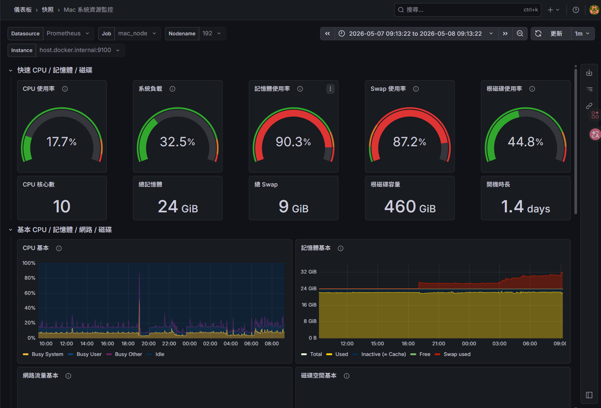
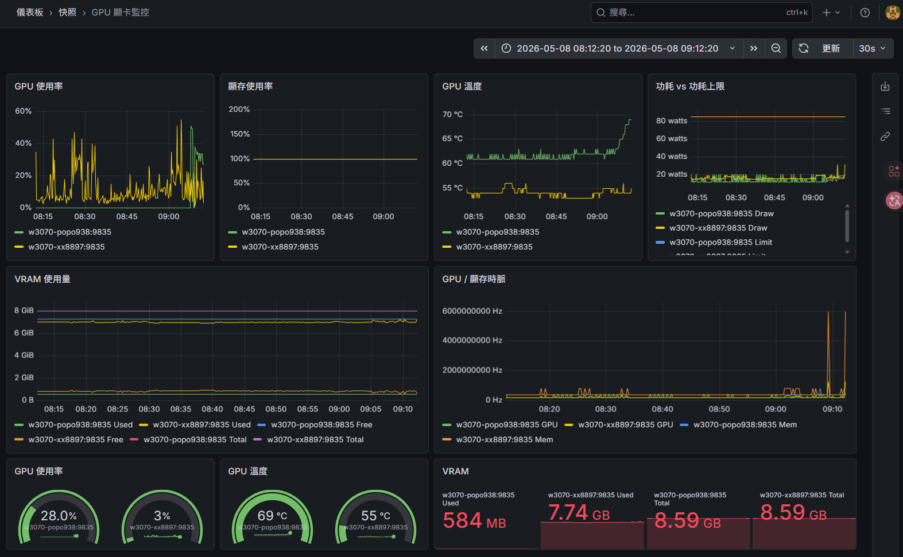
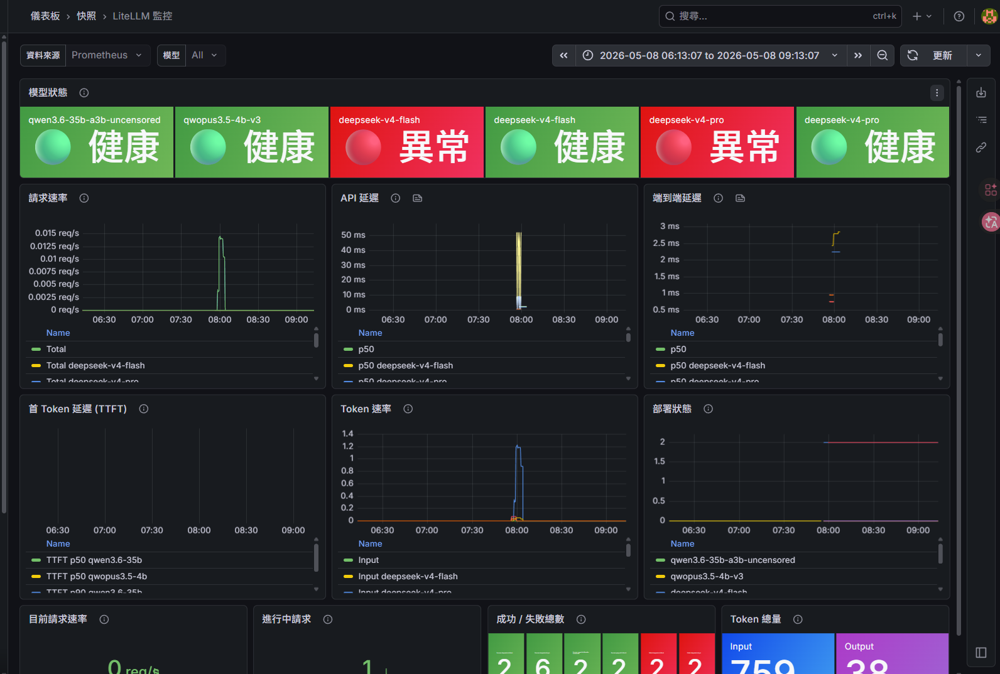
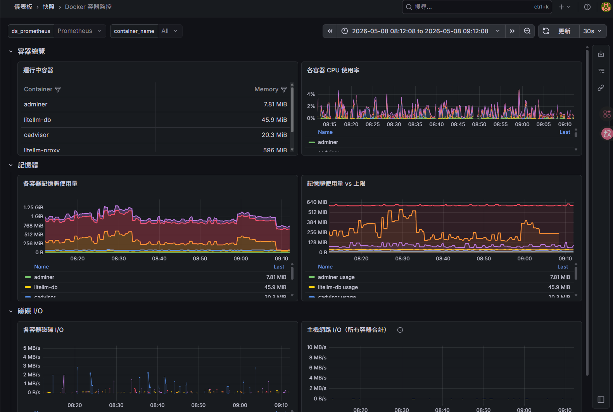
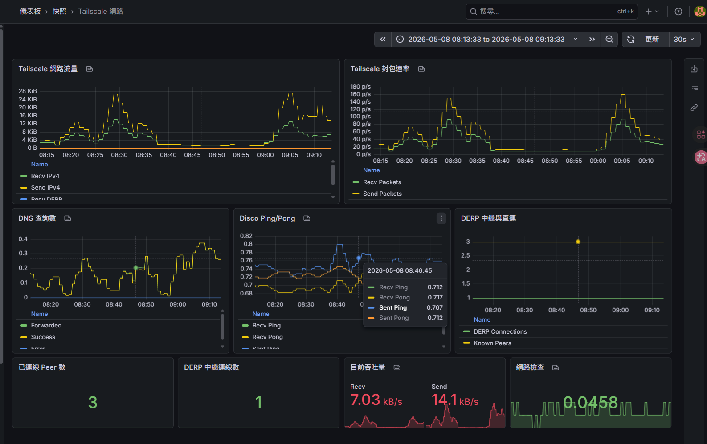
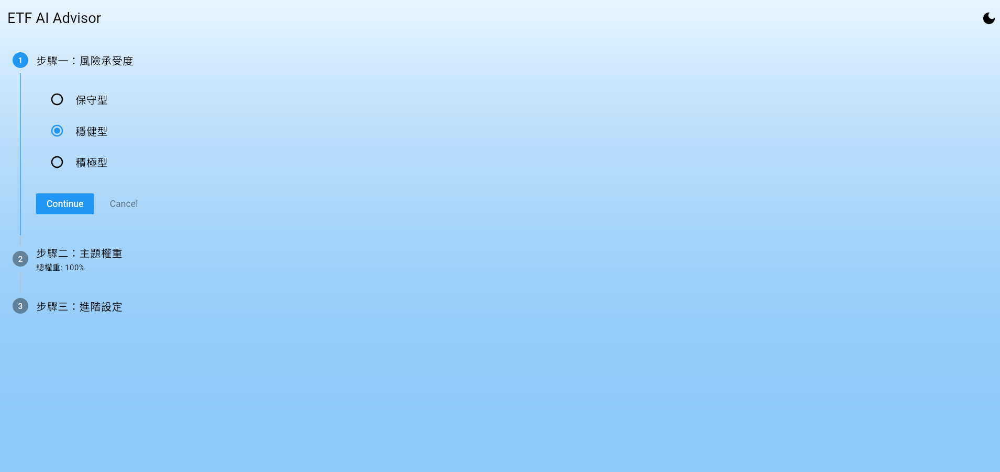
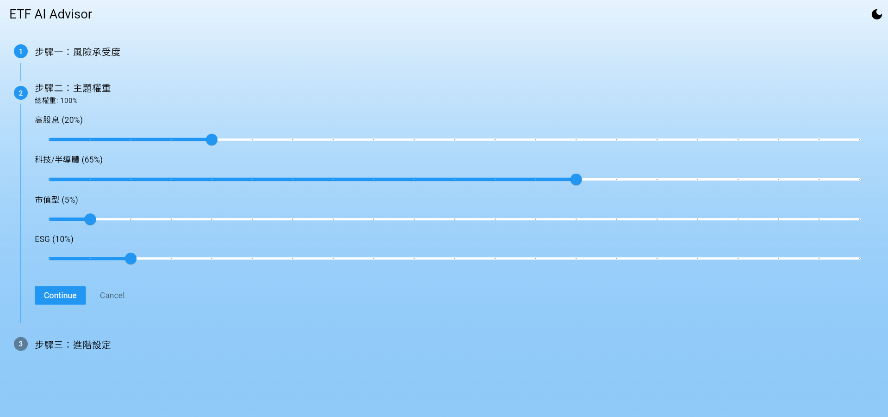
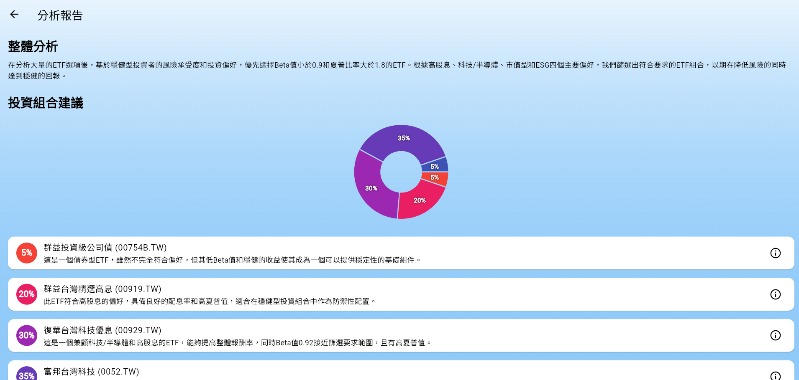
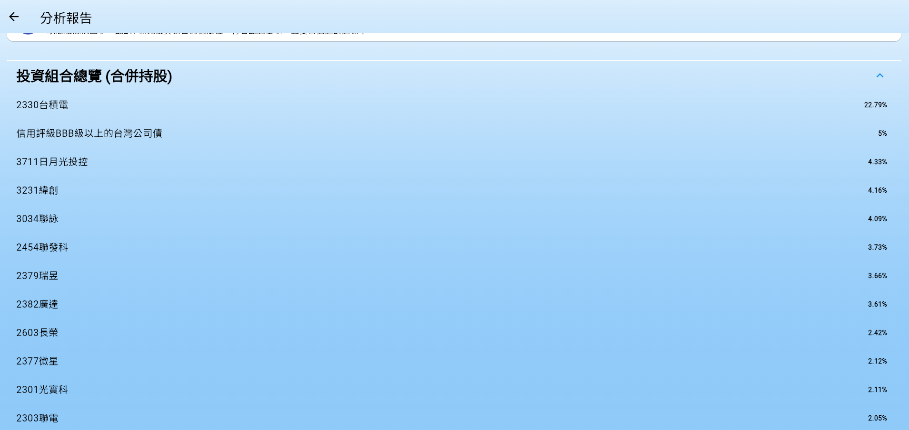
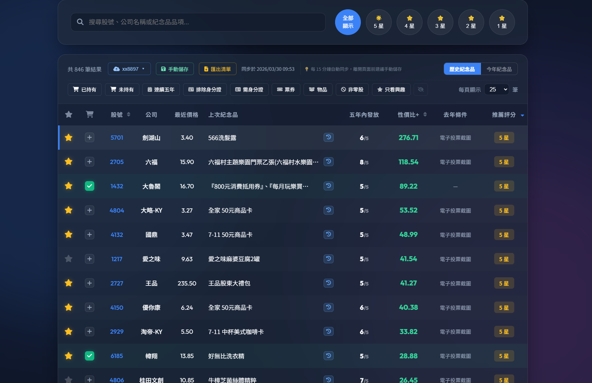
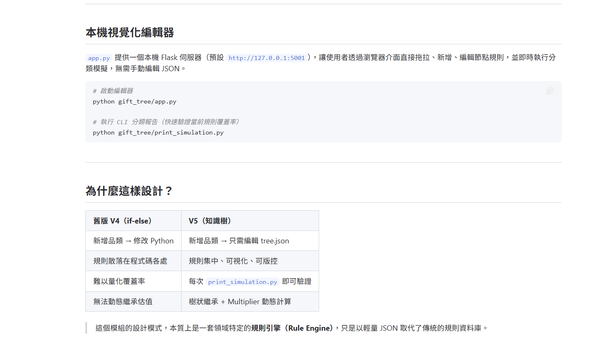
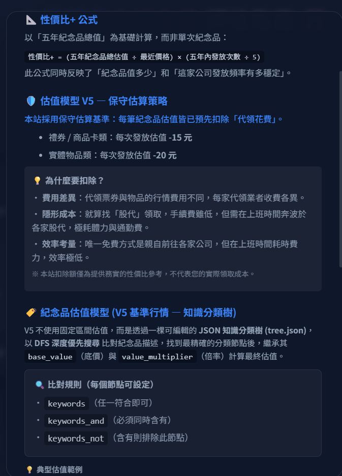
| 價值觀 | 對立面 | 張力所在 | 實例 |
|---|---|---|---|
| Progressive Disclosure | 完整性 | 按需讀取 vs 一次告知 | VIBE_GUIDE 只索引不內嵌，但入口文件仍需先讀映射表 |
| Governance over Control | 效率 | 規則引導 vs 快速行動 | 22 條規則保證一致性，但每次任務前需讀取 300-3000 行 |
| Bilingual Strategy | 維護成本 | 國際化 vs 雙倍維護 | 核心規則雙語，但開發規則未嚴格走 Layer 2 |
| Balanced DRY | 一致性 | 有理由的重複 vs 抽象化 | DIRECTORY_README_RULE 有 573 行，包含大量重複——但每條在不同上下文中自洽 |
| Spec-Driven Development | 執行力 | 規劃完美 vs 交付優先 | spec_parser 可以解析實作計畫，但 executor 的核心方法是 pass |
| Single Source of Truth | 更新順序 | 誰是權威 vs 誰最常被引用 | VIBE_GUIDE 是導航權威，但 DIRECTORY_README 是最被引用的規則 |
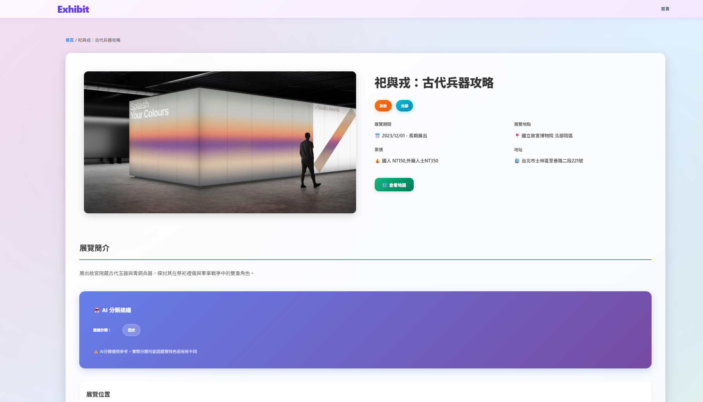
| HomeLab | ETF AI | 台股紀念品 | synthforge | Exhibit | |
|---|---|---|---|---|---|
| 核心問題 | AI 服務可用性 | AI 幻覺與數據品質 | 商業邏輯與代碼耦合 | AI 行為不可控 | 資訊過載與分類 |
| 架構模式 | Supervisor-Worker | RAG 三層保障 | 知識樹引擎 | 治理規則框架 | 前端服務 + AI 分類 |
| 解題策略 | 分層容錯 | 防禦性轉換 | 範式轉移 | 先規則後執行 | AI 輔助篩選 |
| 容錯機制 | 三層 Fallback | 防禦性回應處理 | 閘門邏輯 | 規則強制/推薦/建議 | 無（靜態前端） |
| 成本策略 | 本地優先，雲端保底 | OpenAI API 按量 | 零後端月費 | 本地運行 | GitHub Pages 免費 |
| 監控方式 | Prometheus + 5 Dashboard | 前端載入動畫 | GA4 + Supabase 排名 | task.md 任務追蹤 | 無 |
| 文檔深度 | 23 ADR + 維運手冊 | 10 篇 intro | 8 篇 intro + 視覺化編輯器 | 22 條規則 + 完整 intro | README |
| 誠實一句話 | 3070-A 目前離線 | Excel 無快取 | 金絲雀檢查是 hack | Executor 是 placeholder | 功能較為單純 |